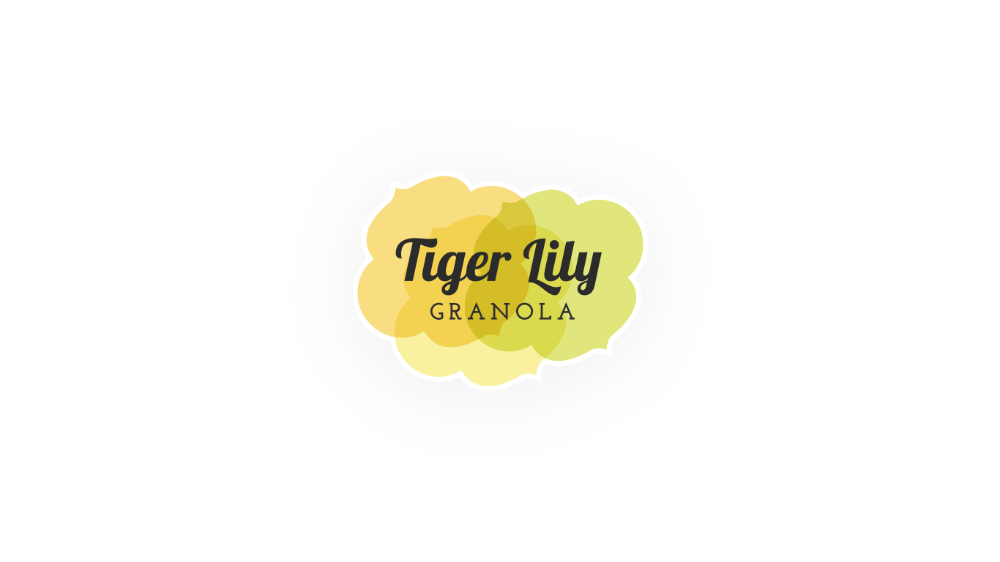
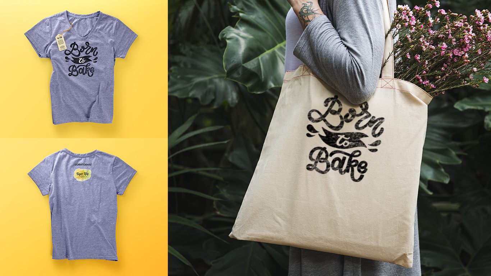
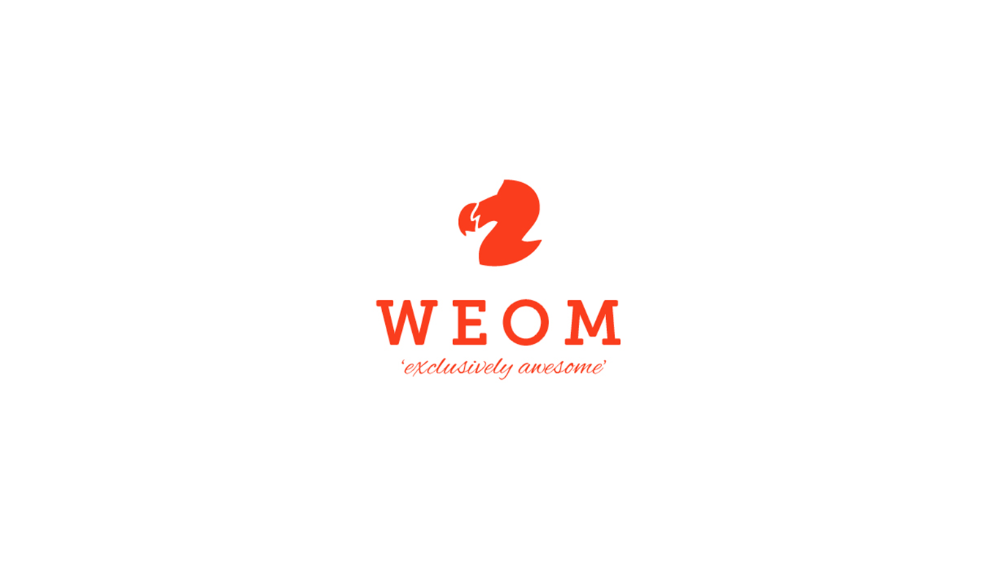
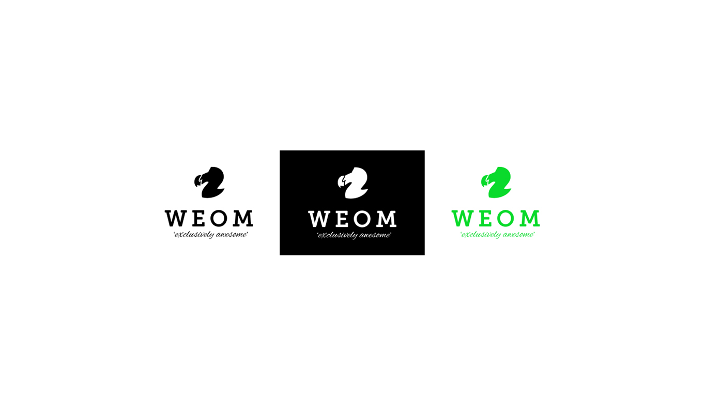

[Ari: confirm or rewrite this intro] Three brand identities, from a small-batch food company to a CBD wellness line to a members-style social club.
[Ari: replace with the real concept] A brand identity for a small-batch granola company — warm, hand-crafted, and a little playful, built to feel at home on a farmers market table as much as a grocery shelf.



[Ari: replace with the real concept] A clinical, trustworthy identity for a CBD product line — cool blues and clean typography that borrow credibility from medical packaging, built to stand out on a shelf full of louder, more "wellness-washed" competitors.


[Ari: replace with the real concept] An identity for a members-style social club, built around a bold eagle mark and a tongue-in-cheek motto — a logo confident enough to work equally well screen-printed on a polo or stamped in gold foil.

